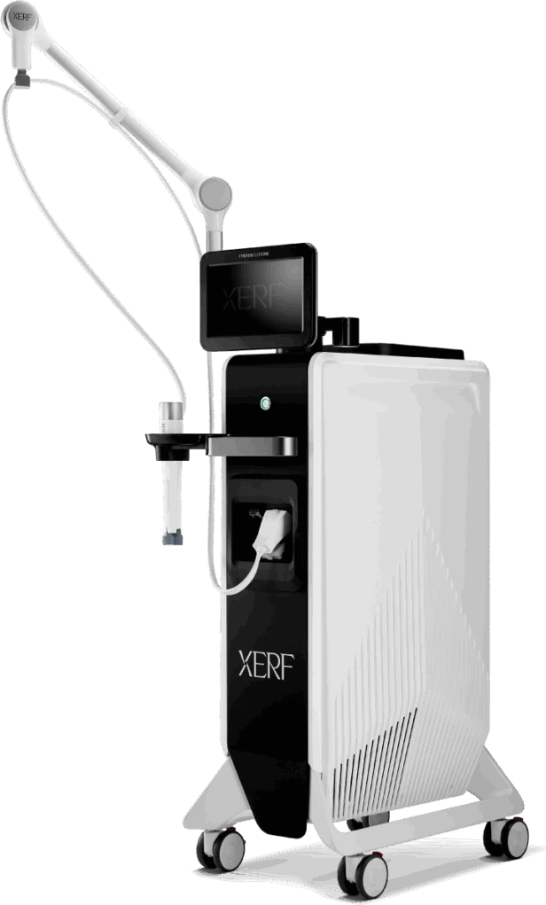

XERF in Penang | CANVAS Medical Clinic
Fractional radiofrequency resurfacing — physician-performed XERF at our Gurney Walk clinic in George Town. Precise RF energy renews the skin's surface and stimulates deeper collagen, refining texture, pores and laxity with a controlled, manageable recovery.


What is XERF?
XERF is a fractional radiofrequency treatment — 'fractional' meaning it treats the skin in a precise grid of micro-zones, leaving healthy skin between them to accelerate healing, much as fractional lasers do but using radiofrequency energy. It works on two levels: renewing the skin surface for texture and pores, and heating the deeper dermis to stimulate collagen for firmness.
At CANVAS Medical Clinic in George Town, Penang, XERF adds a fractional RF resurfacing option to our radiofrequency range — suited to patients wanting texture refinement, pore reduction and firming with a controlled, manageable recovery. As a fractional approach, it can be tuned from gentle refreshers to more intensive resurfacing, matched by your physician to your skin and downtime tolerance.
How it works
- Consultation & assessment. Your physician assesses texture, pores and laxity, and sets the intensity to your skin and acceptable downtime.
- Numbing. Topical numbing cream is applied for comfort before treatment.
- Fractional RF resurfacing. RF energy is delivered in a micro-zone grid, renewing the surface and heating the dermis for collagen.
- Course & healing. A short recovery follows; improvements build over the weeks, with sessions planned to your concern.
Benefits
Two levels at once
Surface renewal for texture plus deep heating for firmness.
Fractional healing
Untreated skin between micro-zones speeds recovery.
Tunable
From gentle refreshers to intensive resurfacing, matched to you.
Texture and pores
Refines rough texture and enlarged pores over a course.
Firming dividend
Deeper collagen stimulation adds tightening.
Physician-controlled
Intensity and safety set by a doctor, not a fixed setting.
Who it's for
XERF may be suitable if you:
- Want texture refinement and smaller-looking pores
- Notice early laxity alongside surface concerns
- Prefer radiofrequency resurfacing to laser for your skin
- Can accept a short recovery for a resurfacing result
- Want intensity tuned to your downtime tolerance
- Are building a skin-rejuvenation programme
XERF is not suitable over active skin infection, during pregnancy, or with certain conditions; recovery varies with intensity. Your physician will set expectations and downtime honestly at consultation. Suitability is always confirmed at consultation.
XERF vs EXION Microneedling RF vs laser
Three routes to resurfaced, remodelled skin. XERF uses fractional radiofrequency — micro-zones of RF energy for surface renewal and deeper collagen. EXION Microneedling RF delivers RF through needles for deeper, scar-focused remodelling. Laser resurfacing uses light energy, excellent for tone and pigment as well as texture.
The best route depends on your primary concern — texture and pores, established scars, or pigment and tone — and your skin type. Your CANVAS physician will recommend honestly, sometimes combining approaches.
Why CANVAS
At CANVAS Medical Clinic, XERF is performed only by qualified, LCP-certified physicians — fractional RF intensity and safety are clinical decisions, tuned to your skin rather than a default setting.
We are located at Gurney Walk in the heart of George Town, with covered parking at Gurney Walk and Gurney Plaza. Walk-ins are welcome but we recommend booking in advance.
- LCP-certified physicians plan and supervise every XERF treatment
- Assessment and screening before treatment — honesty before sales
- We'll tell you if another approach suits your goals better
- Multiple RF platforms under one roof for a genuinely tailored plan
- Central Gurney Walk location with easy covered parking
XERF in Penang, answered.
Care led by our physicians
Your XERF treatment at CANVAS is planned and supervised by qualified, LCP-certified doctors registered with the Malaysian Medical Council — care is never delegated to unsupervised operators. Meet the physicians behind your treatment:
- LCP CertifiedPhysician-led care
- MMC RegisteredQualified doctors
- Genuine SystemsAuthentic & registered
- Open Daily10am – 10pm
Related treatments
Explore other physician-led skin and rejuvenation treatments at our Gurney Walk clinic in George Town, Penang.
From our patients
Read our reviews on Google →Considering XERF in Penang?
Book a consultation at our Gurney Walk clinic. Our physicians will assess your skin and tune an XERF resurfacing plan to your concerns and your downtime.
Reserve a Consultation